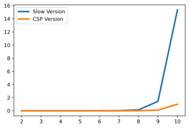
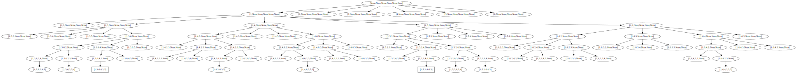

Artificial Intelligence and Search
Jacky Baltes
National Taiwan Normal University
Taipei, Taiwan
jacky.baltes@ntnu.edu.tw

AI Problems
- Many problems in AI can be modeled or turn into search problems
- Puzzles (Logic puzzles, Sudoku, ...)
- Medical diagnosis (Searching for the set of deseases that cause the symptoms)
- Computer vision: search for the world model that can create the image
- Logistics: search for best way to move packages and trucks to their destination
- Machine learning: search for the model to explain the data
- About 1995: Search is the crux of AI
We can solve all AI problems if we can find a fast search method
def is_valid( table ):
if ( table[0] != 1 ):
return False
for bi in range(len(table)):
pi = ( bi - 1 + len(table) ) % len(table)
ni = ( bi + 1 ) % len(table)
b = table[bi]
nb = b + 1
pb = b - 1
if ( table[pi] in [ nb, pb] ) or ( table[ni] in [ nb, pb] ):
#print("Failed", table, pi, bi, ni, nb, b, pb, table[pi], table[ni] )
return False
if b == 3 or b == 5:
if ( table[pi] in [ 3, 5] ) or ( table[ni] in [ 3, 5] ):
return False
return True
def all_permutations( lst, level = 0 ):
#print(" " * level, f'all_permutations({lst})')
if lst == []:
#print(" " * level, f'all_permutations({lst}) ==> []')
return []
else:
perms = []
for i in range(len(lst)):
rem = all_permutations( lst[0:i] + lst[i+1:], level + 1 )
if len(rem) > 0:
res = [ [ lst[i] ] + r for r in rem ]
#print(" " * level, f'all_permutations({lst}) ==>{res}')
perms = perms + res
else:
#print(" " * level, f'all_permutations({lst}) ==>{[lst[i]]}')
perms.append( [ lst[i] ] )
return perms
N_BROTHERS = 6
def bickering_brothers_slow(n_brothers):
possible = all_permutations([ x for x in range(1,n_brothers+1)])
count = 0
for p in possible:
count = count + 1
#if is_valid(p):
# print("Found solution", p )
return count
for i in range(2,9):
count = bickering_brothers_slow(i)
print( f"Number of checks with {i} brothers is {count}")
Number of checks with 2 brothers is 2 Number of checks with 3 brothers is 6 Number of checks with 4 brothers is 24 Number of checks with 5 brothers is 120 Number of checks with 6 brothers is 720 Number of checks with 7 brothers is 5040 Number of checks with 8 brothers is 40320
Find a Better Search
- My first implementation of the solution to the Professor Layton - Bickering Brothers problem was not very efficient
- Wasted a lot of time during the search, because
- program checks all possibilites of assignments
- but if we make an assignment [1, 2, V, X, Y, Z ], then this is already not a solution
- it does not matter what we assign to V, X, Y, Z (3,4,5,6), (4,6,3,5), ...
- We waste 4! number of tries
- Our program could run 4!=24 times faster
Find a Better Search
- Change implementation to speed up the search
- Reject impossible assignments as quickly as possible
- Modify our search to check for illegal/impossible assignments as soon as possible
- Extend our
is_validto deal with uninstantiated/not assigned positions
import timeit
NO_SOLUTION, SOLUTION, POSSIBLE_SOLUTION = 0,1,2
def is_valid( table ):
if (table[0] is not None) and ( table[0] != 1 ):
return NO_SOLUTION
for bi in range(len(table)):
pi = ( bi - 1 + len(table) ) % len(table)
ni = ( bi + 1 ) % len(table)
b = table[bi]
if b is not None:
nb = b + 1
pb = b - 1
if ( table[pi] in [ nb, pb] ) or ( table[ni] in [ nb, pb] ):
#print("Failed", table, pi, bi, ni, nb, b, pb, table[pi], table[ni] )
return NO_SOLUTION
if b == 3 or b == 5:
if ( table[pi] in [ 3, 5] ) or ( table[ni] in [ 3, 5] ):
return NO_SOLUTION
if None in table:
return POSSIBLE_SOLUTION
else:
return SOLUTION
def bickering_brothers_csp( n_brothers ):
initial = [ None ] * n_brothers
queue = []
queue.append( (initial,0) )
num_nodes = len(queue)
sols = []
while( len(queue) > 0 ):
current,level = queue.pop()
valid = is_valid(current)
if valid == SOLUTION:
sols.append( current)
elif valid == POSSIBLE_SOLUTION:
#print(" " * level, current)
for bi in range(len(current)): #-1,-1,-1):
if current[bi] is None:
for nb in range(n_brothers, 0,-1):
if nb not in current:
next = current.copy()
next[bi] = nb
queue.append( (next,level+1) )
num_nodes = num_nodes + 1
break
return num_nodes, sols
num_nodes_slow = 0
num_nodes_csp = 0
for n_brothers in range(2,9):
time_slow = timeit.timeit( f'bickering_brothers_slow( {n_brothers} )', setup='from __main__ import bickering_brothers_slow', number = 1 )
time_csp = timeit.timeit( f'bickering_brothers_csp( {n_brothers} )', setup='from __main__ import bickering_brothers_csp', number = 1 )
print( f'Solutions for {n_brothers} time in {time_csp} tries, slow method {time_slow}' )
Solutions for 2 time in 1.9093999071628787e-05 tries, slow method 2.2230000467970967e-05 Solutions for 3 time in 2.1680998543160968e-05 tries, slow method 2.5719000404933468e-05 Solutions for 4 time in 3.6891000490868464e-05 tries, slow method 7.500900028389879e-05 Solutions for 5 time in 7.422199996653944e-05 tries, slow method 0.000370031999409548 Solutions for 6 time in 0.0002808779991028132 tries, slow method 0.002242569000372896 Solutions for 7 time in 0.001590873000168358 tries, slow method 0.015930297999148024 Solutions for 8 time in 0.011600538000493543 tries, slow method 0.14150876999883621
import matplotlib.pyplot as plt
import numpy as np
xs = np.arange(2,11)
ys = np.zeros( ( 2, len(xs) ) )
for xi in range(len(xs) ):
x = xs[xi]
time_slow = timeit.timeit( f'bickering_brothers_slow( {x} )', setup='from __main__ import bickering_brothers_slow', number = 1 )
time_csp = timeit.timeit( f'bickering_brothers_csp( {x} )', setup='from __main__ import bickering_brothers_csp', number = 1 )
ys[0, xi] = time_slow
ys[1, xi] = time_csp
fig = plt.figure( dpi=200 )
ax = fig.add_subplot(1,1,1)
ax.plot(xs,ys[0,:], linewidth=3, label="Slow Version" )
ax.plot(xs,ys[1,:], linewidth=3, label="CSP Version")
ax.legend()
g1 = addJBFigure("g1", 0, 0, fig )
plt.close()
Runtime Comparison
- Smarter version runs much faster as problem size increases
- Even smart version however grows exponentially
- The huge improvement in AI has been largely due to running the same algorithms on faster graphics processing units (GPU)
- This does not overcome the computational complexity problem - so more complex vision problems can still not be solved
- Another big improvement in machine learning came from better and more training data
import graphviz as gv
NO_SOLUTION, SOLUTION, POSSIBLE_SOLUTION = 0,1,2
def is_valid( table ):
if (table[0] is not None) and ( table[0] != 1 ):
return NO_SOLUTION
for bi in range(len(table)):
pi = ( bi - 1 + len(table) ) % len(table)
ni = ( bi + 1 ) % len(table)
b = table[bi]
if b is not None:
nb = b + 1
pb = b - 1
if ( table[pi] in [ nb, pb] ) or ( table[ni] in [ nb, pb] ):
#print("Failed", table, pi, bi, ni, nb, b, pb, table[pi], table[ni] )
return NO_SOLUTION
if b == 3 or b == 5:
if ( table[pi] in [ 3, 5] ) or ( table[ni] in [ 3, 5] ):
return NO_SOLUTION
if None in table:
return POSSIBLE_SOLUTION
else:
return SOLUTION
def bickering_brothers_csp( n_brothers ):
initial = [ None ] * n_brothers
queue = []
g = gv.Digraph( comment='Depth First Search' )
queue.append( (initial,0, [] ) )
num_nodes = len(queue)
sols = []
while( len(queue) > 0 ):
current, level, parent = queue.pop()
valid = is_valid(current)
if valid == SOLUTION:
sols.append( current)
g.node( str(current), shape='box')
if parent is not None and len(parent) > 0:
g.edge( str(parent[-1]), str(current) )
elif valid == POSSIBLE_SOLUTION:
g.node( str(current) )
if parent is not None and len(parent) > 0:
g.edge( str(parent[-1]), str(current) )
#print(" " * level, current)
for bi in range(len(current)): #-1,-1,-1):
if current[bi] is None:
for nb in range(n_brothers, 0,-1):
if nb not in current:
next = current.copy()
next[bi] = nb
queue.append( (next, level+1, parent.copy() + [ current ] ) )
num_nodes = num_nodes + 1
break
return num_nodes, sols, g
num_nodes_slow = 0
num_nodes_csp = 0
n_brothers = 6
num_nodes, _ , g= bickering_brothers_csp( n_brothers )
print( f'Solutions for {n_brothers} number of nodes {num_nodes}' )
dfs1 = addJBGraph( "dfs1", 0, 0, g )
Solutions for 6 number of nodes 80
Depth First Search and Trees
- Make one guess for a solution and then continues to try and expand it
- Search method goes down/deep as quickly as possible
- Search will expand left most child first
- Backtracking: If a node cannot be exanded to a solution/fails, then we must move up the tree to a previous node, which could still lead to a solution